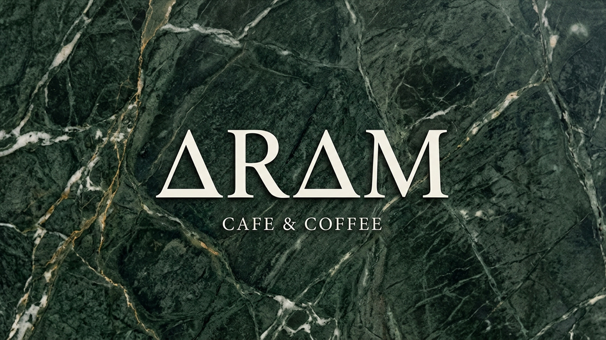
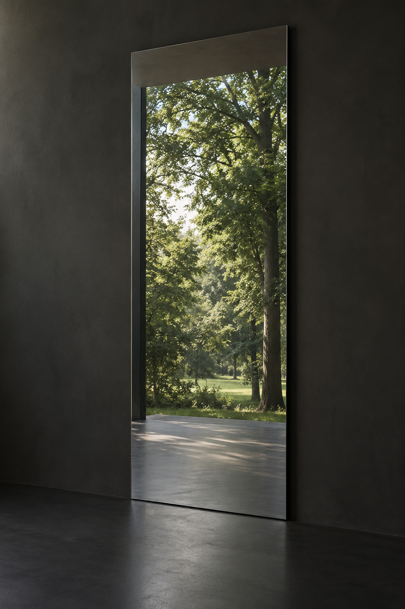
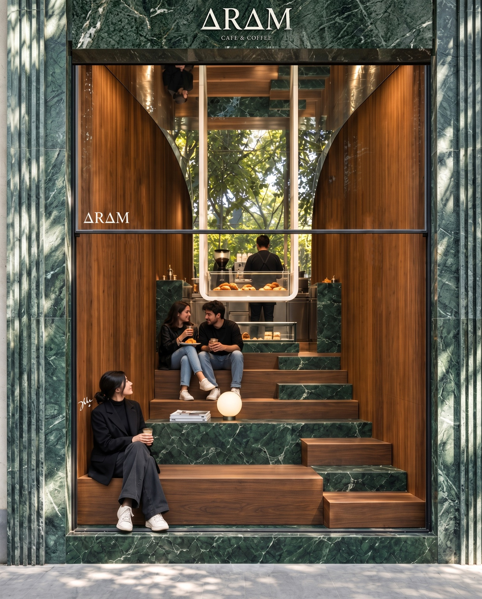
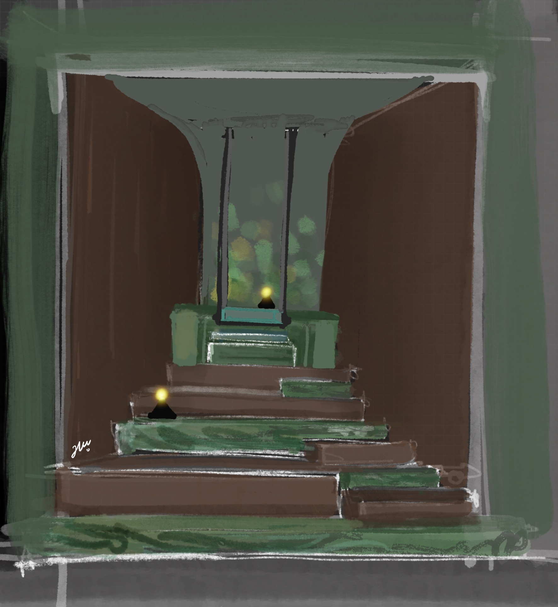
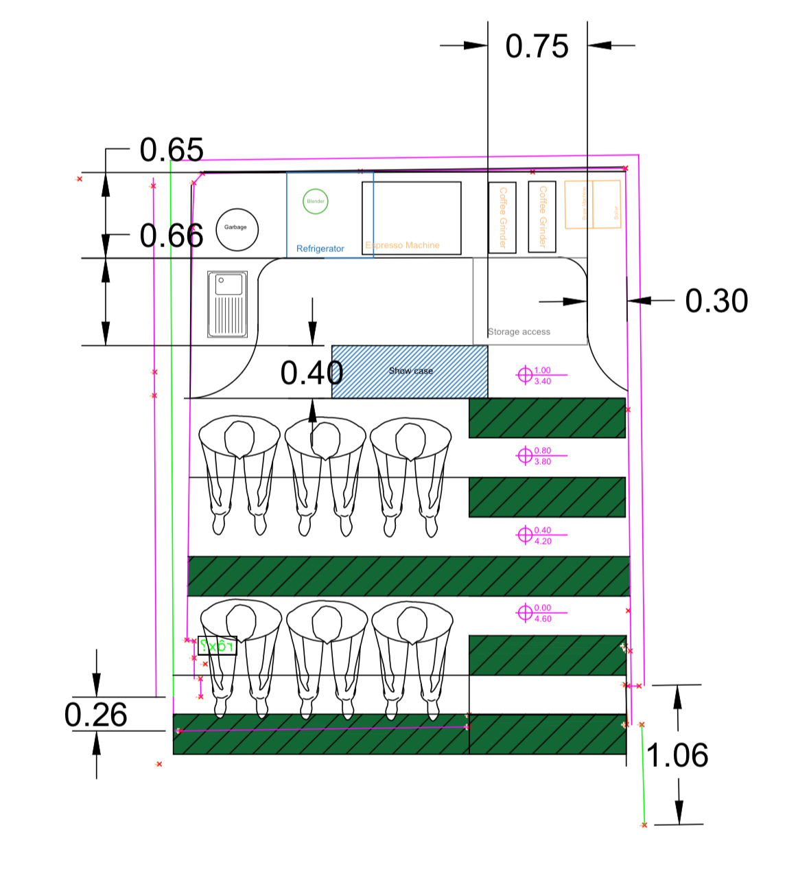

A focused menu
Professional, precise selections.
Every choice has a purpose.
A calm presence.
A generous heart.
A mind that thinks beyond the ordinary.
The starting point was the client's character:
composed, authentic and quietly ambitious.
Tree shade. Deep greens. A slower rhythm.
The nearby park offered more than a view.
It offered a feeling the cafe could belong to.
A quiet corner within the everyday.
Somewhere to sit, listen, talk and simply stay.
A name that means calm.
A promise carried into the space.
Classical letterforms reflect the client's authentic,
established character. The triangular A forms evoke
the upward movement of the cafe's steps.


Drag slowly to reveal the reflection
across the complete architectural surface.
A palette drawn from the park
and the character of its owner.
The green of the park finds weight and permanence in marble.
Movement and pause
share the same architecture.
Layered seating turns a compact cafe
into a place for a cup, a conversation
and a moment away from the rush.
Professional, precise selections.
Every choice has a purpose.
Good music, easy conversation
and time to enjoy the moment.
The calm of the park,
at the scale of a cafe.

JALALMFARD.COMDrag across the image to watch the first idea become the final space.


FINAL PLAN · ZANBAGH STREET CAFE PROJECT